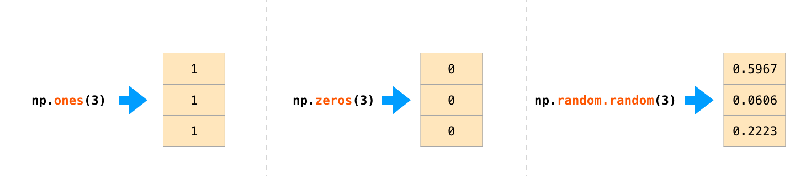
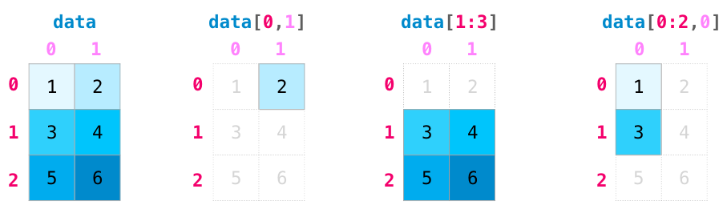
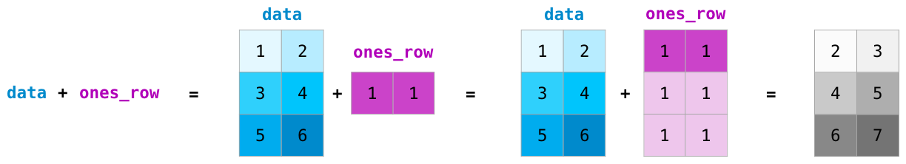

NumPy#
What you need to know
NumPy is the core python library for numerical and scientific computing.
A numpy array is a grid of values, all of the same type, and is indexed by nonnegative integers.
The array can have any number of dimensions 1D, 2D, 3D, …
The shape of an array is a tuple of integers giving the size of the array along each dimension. For example a 1D vector of size 4 is (4,). a matrix of size 2 is (2,2), a matrix with size 2x5 is (2,5)
Numpy arrays can be generates either by feeding lists to numpy or on the fly using numpy special methods
There are many great resources out there to learn numpy. See these three
Array Creation#
Generating numpy arrays from lists#
a=np.array([1,2,3,4,5,6,7,8,9])
a
type(a)
a.shape
Just like lists we can change elements via assignment
Lists of lists create 2D arrays!
b = np.array([[1,2,3],
[4,5,6]])
b
b.shape
Array vs list: which is faster?#
We can use %timit to compare speeds of elementwise operations done with lits vs numpy
%timeit [x**2 for x in range(10000)]
x = np.arange(10000)
%timeit x**2
Notice that numpy carried out squaring on every single element at once instead of requiring manual iteration.
With 10,000 integers, the Python list and for loop takes an average of single milliseconds, while the NumPy array completes the same operation in tens of microseconds. This is a speed increase of over 100x by using the NumPy array (1 millisecond = 1000 microseconds).
For larger lists of numbers, the speed increase using NumPy is considerable.
Elementwise operations with numpy#
Basic mathematical functions operate elementwise on arrays!
Example:
np.sqrt(x)orx**0.5will take square root of every single element on numpy array x
x = np.array([1,2,3,4])
y = np.array([5,6,7,8])
x+10
x + y
x * y
y ** 2
The addition example shows that one can also do operations on arrays with unequal shapes!
In mathematics you can’t add vector to a scalar but in numpy you can!
These are powerful operations are called broadcasting. See the end for these rules and examples
Dot product and linear algebra#
v = np.array([9,10])
w = np.array([11, 12])
# Inner product of vectors; both produce 219
print(v@w)
print(np.dot(v, w))
np.linalg.norm(v) # length of vector
Generating arrays using special methods#
Creating arrays of ones or zeros can also be useful as placeholder arrays, in cases where we do not want to use the initial values for computations but want to fill it with other values right away.
For instance
np.zeros,np.ones,np.emptycreate such placeholder arrays.np.randomcontains many functions for generating random numbers. We will utilize those to build simulationsThere are large set of methods for generating arrays for common numeric tasts. Below are listed a few we will use most etensively
Function |
Description |
|---|---|
|
Array from a list |
|
Array with know step |
|
Creates an array from [start, stop] with num number of steps |
|
Array of zeros |
|
Array of ones |
|
Two 2D arrays from two 1D arrays |
|
Generates random floats in the range [0,1) in an even distribution |
|
Generates random floats in a normal distribution centered around zero |

np.zeros(3) # Create an array of all zeros
np.ones(11)
np.random.randn(5)
Genearting N-dimensional arrays#
Generating 1D arrays is done by specifying length
Nnp.zeros(N)Generating 2D arrays is done by specifying
Nrows andMcolumnsnp.zeros((N, M))Gemerating 3D arrays is done by specigyin

np.ones((1,5))
np.random.random((4,4)) # Create an array filled with random values
np.random.random((4, 5, 3)) # Create an array filled with random values
Indexing, slicing and shaping arrays#
Slicing: Similar to Python lists, numpy arrays can be sliced. Since arrays may be multidimensional, you must specify a slice for each dimension of the array:

Quick example: Create and Slice the data to get the elements shown
a = np.array([[1,2,3,4],
[5,6,7,8],
[9,10,11,12]])
a.shape
Predict the sliced elements
a[1,:4] #
a[1,3]
a[:,-1]
a[-1,:]
Boolean masks#
Filtering values#
We can also use Boolean masks for indexing – that is, arrays of True and False values. Consider the following example, where we return all values in the array that are greater than 3:
arr = np.array([1, 2, 3, 4, 5, 6, 7])
array([False, False, True, True])
mask = arr > 3
mask
arr[mask]
Or you can use the boolean mask directly on array resulting in extremely compact and powerful notation
arr[ary>3]
array([1, 2, 3])
Modifying Elements in place#
arr = np.array([10, 20, 30, 40, 50])
arr[arr > 25] = 99
print(arr)
Using Multiple Conditions#
Boolean masks support logical operations (&, |, ~) standing for and, or and not
arr = np.array([1, 2, 3, 4, 5, 6])
mask = (arr > 2) & (arr < 5) # Values greater than 2 AND less than 5
print(arr[mask])
print(arr[~mask])
Finding Index Positions#
np.where() returns indices where the condition is True.
In the example below, we assign a 1 to all values in the array that are greater than 2 – and 0, otherwise:
indices = np.where(arr > 3)
print(indices)
np.where(ary > 3, 1, 0)
array([0, 0, 1, 1])
Aggregation#
Numpy provides many useful functions for performing computations on arrays; one of the most useful is sum:
x = np.array([[1,2],[3,4]])
np.sum(x,axis=1)
print(np.sum(x)) # Compute sum of all elements; prints "10"
print(np.sum(x, axis=0)) # Compute sum of each column; prints "[4 6]"
print(np.sum(x, axis=1)) # Compute sum of each row; prints "[3 7]"
print(x.max())
print(x.min())
Reshaping arrays#
In practice, we often run into situations where existing arrays do not have the right shape to perform certain computations. A
Remember once created that the size of NumPy arrays is fixed
Fortunately, this does not mean that we have to create new arrays and copy values from the old array to the new one if we want arrays of different shapes – the size is fixed, but the shape is not. NumPy provides a
reshapemethods that allow us to obtain a view of an array with a different shape.
x=np.array([1,2,3,4,5,6,7,8,9,10])
x=x.reshape(2,5)
x
x=x.reshape(5,2)
x
x=x.reshape(-1,2) # when you put -1 it will autmaotaically infer the number
x
arr = np.arange(12) # Array with values 0 to 11
reshaped = arr.reshape(2, 2, 3) # 2 blocks, 2 rows, 3 columns
Broadcasting rules of numpy arrays#
Broadcasting is a powerful feature in NumPy that enables arithmetic operations between arrays of different shapes. It allows a smaller array to be automatically expanded to match the shape of a larger array without explicit replication, making computations more efficient.
Dimension Padding: If the two arrays have a different number of dimensions, the shape of the smaller array is padded with ones on the left (i.e., leading dimensions) to match the larger array.
Dimension Expansion: If the arrays have mismatched shapes in any dimension, the one with a size of 1 in that dimension is stretched to match the corresponding size of the other array.
Compatibility Check: If the shapes are incompatible—meaning that in any dimension the sizes differ and neither is 1—a broadcasting error occurs.

data = np.array([[1,2],[3,4],[5,6]])
ones_row = np.array([1,1])
print(data.shape, ones_row.shape)
print(data+ones_row)
np.newaxis#
np.newaxisincreases the dimensionality of an array by adding a new axis, allowing for reshaping and enabling broadcasting in operations.
A = np.array([1, 2, 3]) # Shape (3,)
print(A.shape)
A_new = A[:, np.newaxis] # Shape (3,1)
print(A_new.shape)
# Define two 1D arrays
A = np.array([1, 2, 3]) # Shape (3,)
B = np.array([10, 20, 30]) # Shape (3,)
# Reshape A to a column vector using np.newaxis
A_col = A[:, np.newaxis] # Shape (3,1)
# Perform broadcasting: adding a column vector (3,1) and a row vector (3,)
result = A_col + B # Shape (3,3)
# Print results
print("Array A reshaped as a column:\n", A_col)
print("Array B as a row:\n", B)
print("Result of broadcasting A_col + B:\n", result)
A[:, np.newaxis]reshapes A from (3,) to (3,1), making it a column vector.Broadcasting allows us to add A_col (3×1) to B (1×3), producing a 3×3 matrix.
This demonstrates how
np.newaxisenables broadcasting for element-wise operations in different dimensions.
Problems#
1. Predict and explain the following statements
Create an array of the numbers
1,5,19,30Create an array of the numbers
-3,15,0.001,6.02e23Create an array of integers between -10 and 10
Create an array of 10 equally spaced angles between 0 and \(2\pi\)
Create an array of logarithmically spaced numbers between 1 and 1 million. Hint: remember to pass exponents to the
np.logspace()function.Create an array of 20 random integers between 1 and 10
Create an array of 30 random numbers with a normal distribution
Predict the outcome of the following operation between two NumPy arrays. Test your your prediction.
\[\begin{split} \left[ \begin{array}{cc} 1 & 1 \\ 2 & 2 \end{array} \right] + \left[1 \right] = \,\, ?\end{split}\]Predict the outcome of the following operation between two NumPy arrays. Test your your prediction.
\[\begin{split} \left[ \begin{array}{ccc} 1 & 8 & 9 \\ 8 & 1 & 9 \\ 1 & 8 & 1 \end{array} \right] + \left[ \begin{array}{cc} 1 & 1 \\ 1 & 1 \end{array} \right] = \,\, ? \end{split}\]Predict the outcome of the following operation between two NumPy arrays. Test your your prediction.
\[\begin{split} \left[ \begin{array}{cc} 1 & 8 \\ 3 & 2 \end{array} \right] + \left[ \begin{array}{cc} 1 & 1 \\ 1 & 1 \end{array} \right] = \,\, ?\end{split}\]
2. Array Manipulation
Create an array
Bthat contains integers 0 to 24 (including 24) in one row. Then reshapeBinto a 5 row by 5 column arrayExtract the 2nd row from
B. Store it as a one column array calledx.Store the number of elements in array
xin a new variable calledy.Extract the last column of
Band store it in an array calledz.Store a transposed version of
Bin an array calledt.
3. Arrray slicing
The 1D NumPy array
Gis defined below. But your code should work with any 1D NumPy array filled with numeric values.
G = np.array([5, -4.7, 99, 50, 6, -1, 0, 50, -78, 27, 10])
Select all of the positive numbers in
Gand store them inx.Select all the numbers in
Gbetween0and30and store them iny.Select all of the numbers in
Gthat are either less than-50or greater than50and store them inz.
Generate a one-dimensional array with the following code and index the 5th element of the array.
arr = np.random.randint(0, high=10, size=10)
Generate a two-dimensional array with the following code.
arr2 = np.random.randint(0, high=10, size=15).reshape(5, 3)
a. Index the second element of the third column.
b. Slice the array to get the entire third row.
c. Slice the array to access the entire first column.
d. Slice the array to get the last two elements of the first row.
4. random numbers
For the following randomly-generated array:
arr = np.random.rand(20)
a. Find the index of the largest values in the following array.
b. Calculate the mean value of the array.
c. Calculate the cumulative sum of the array.
d. Sort the array.
Generate a random array of values from -1 \(\rightarrow\) 1 (exclusive) and calculate its median value. Hint: start with an array of values 0 \(\rightarrow\) 1 (exclusive) and manipulate it.
Generate a random array of integers from 0 \(\rightarrow\) 35 (inclusive) and then sort it.
Hydrogen nuclei can have a spin of +1/2 and -1/2 and occur in approximately a 1:1 ratio. Simulate the number of +1/2 hydrogen nuclei in a molecule of six hydrogen atoms and plot the distribution. Hint: being that there are two possible outcomes, this can be simulated using a binomial distribution.